Three ways to draw a pine tree
One picture of a pine tree on a small hill, run through three drawing routes in the background pipeline. Each route makes a different kind of image, and each one earns that look with a different set of algorithms. This page follows the actual code paths, step by step, with the real intermediate images and the real numbers from the run.
0. The source picture
Two bitmaps, same scene. The left one is flat colour only: no outlines, hard edges. The right one adds a 3 px ink outline to every object, and that is what a line-art source looks like. The flat route wants the first, the comic and sketch routes want the second.
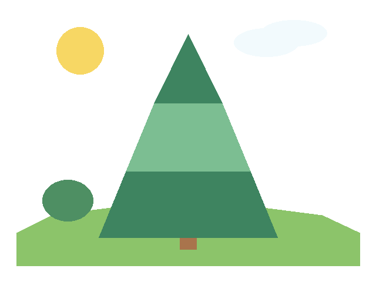
src/pine_flat.png — fills only.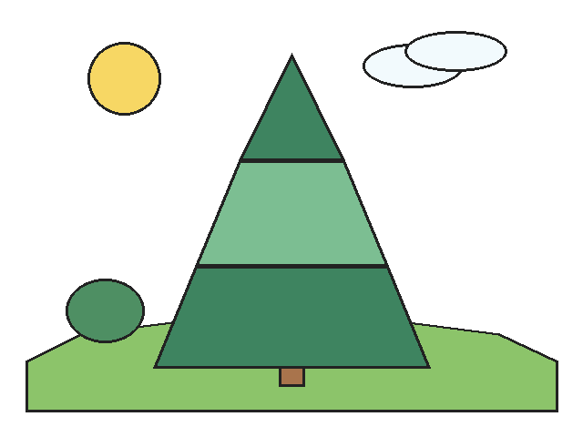
src/pine_ink.png — fills plus ink.1. Flat: trace the regions
flat.py bg — the region engine.
This route treats the picture as a map of solid colour patches. Find the patches, pull each outline slightly inward so neighbours do not fight, then redraw each patch with a wobbly hand-drawn brush. Nothing is inferred: what you see is what the colours say.
Step 1 — mark the extremes
Pure white and pure black are special, because the tracer normally treats them as paper
and as ink it should discard. They get swapped for two loud sentinels first
(#FF00B4 for white, #00C85A for black) so they survive tracing as
real content, then get painted back. The picture now has a magenta sky, which is
alarming and temporary.
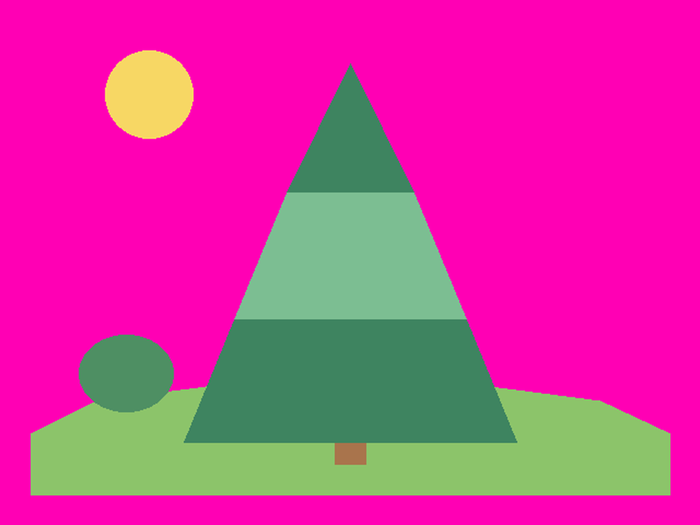
Step 2 — trace closed regions
Colours are grouped, connected components are found, and each component's boundary is traced into a closed polygon. The result is a hard partition of the page: every pixel belongs to exactly one region, and neighbouring regions share an edge.
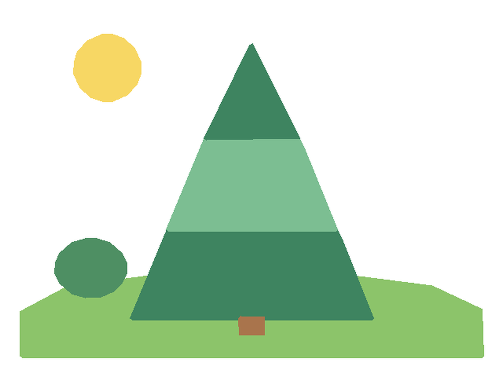
Region count from the run: 8 including the paper, so 7 drawn shapes (mound, three pine tiers, trunk, sun, bush).
size/2 - 2.5 px: it lands inside its own
region, leaving a 2.5 px overlap that the neighbour's outline covers. Slivers that do
not survive the inset are antialias fringe and get dropped. Limbs are drawn as strokes as
wide as the part, so they are not inset.
Final render, with the hand brush and jitter applied to every outline and fill:
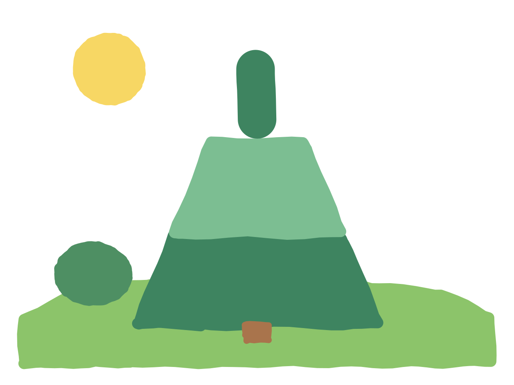
flat.py bg src/pine_flat.png → 6 paths + 7 polylines, 43920 byte zip, ~1.3 s.2. Comic: keep the ink, flatten the rest
flat.py bg --comic — the same region engine with an ink recovery pass.
This route is for sources that already have line work: a sketch, a cartoon with black outlines. The trick is to separate the drawing into two layers, a colour layer and an ink layer, clean the colour layer up as if it were flat art, then put the ink back on top as fresh hand strokes.
Step 1 — take the ink out
Ink is any pixel that is much darker than the local neighbourhood (a 9 px median), grown by a pixel for the antialiased edge. Then the neighbouring colours grow over the vacated ink, so an outline between tree and sky becomes tree or sky rather than a gap.
7 px — that is a fill, not a line — growing each one
back to its own island. On this scene nothing was protected: the three tiers are
separate wide shapes, and their black outlines are thin enough to be removed and
redrawn as 18 strokes.
Step 2 — cut the palette, kill the hatch
The clean colour layer is quantized to 24 colours with an octree, then a 7 px mode filter runs over the palette indices. The mode filter is what erases pencil hatching and stray specks: each pixel takes the most common palette index in its neighbourhood, so a lone dark scratch in a green tier disappears.
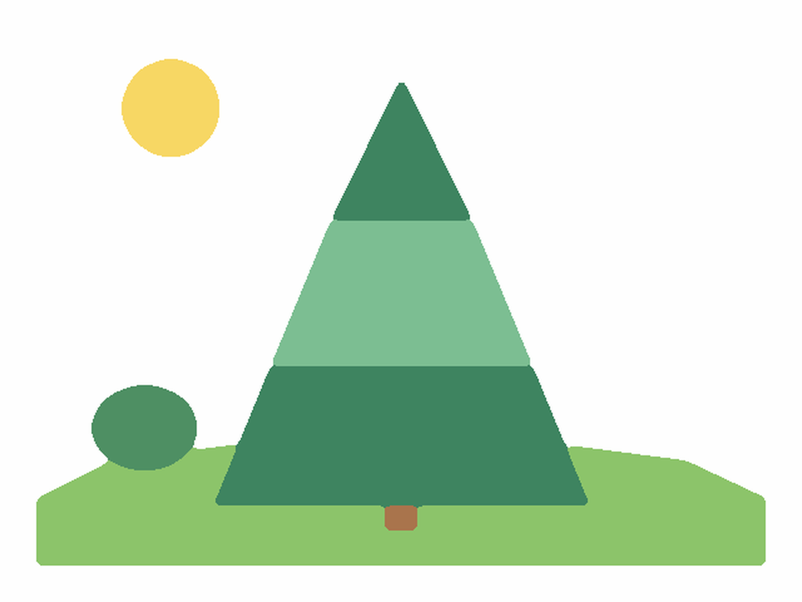
Step 3 — thin the ink and redraw it
The ink mask is thinned to a one-pixel skeleton with Zhang–Suen, L-shaped corner spurs are pruned, and the skeleton is walked as chains. Each chain becomes a brush stroke whose width comes from the original blob's thickness, and whose colour is sampled from the source pixels underneath it.
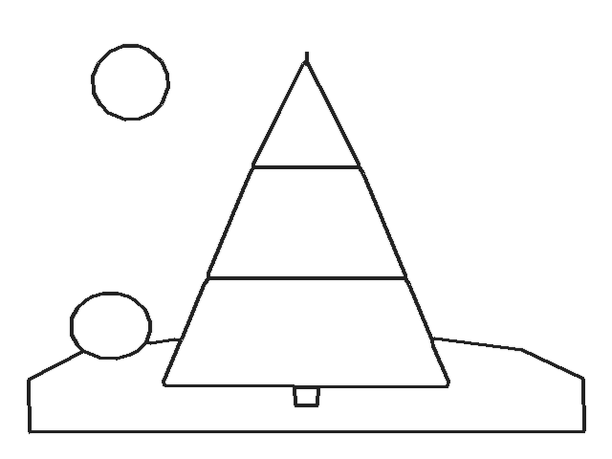
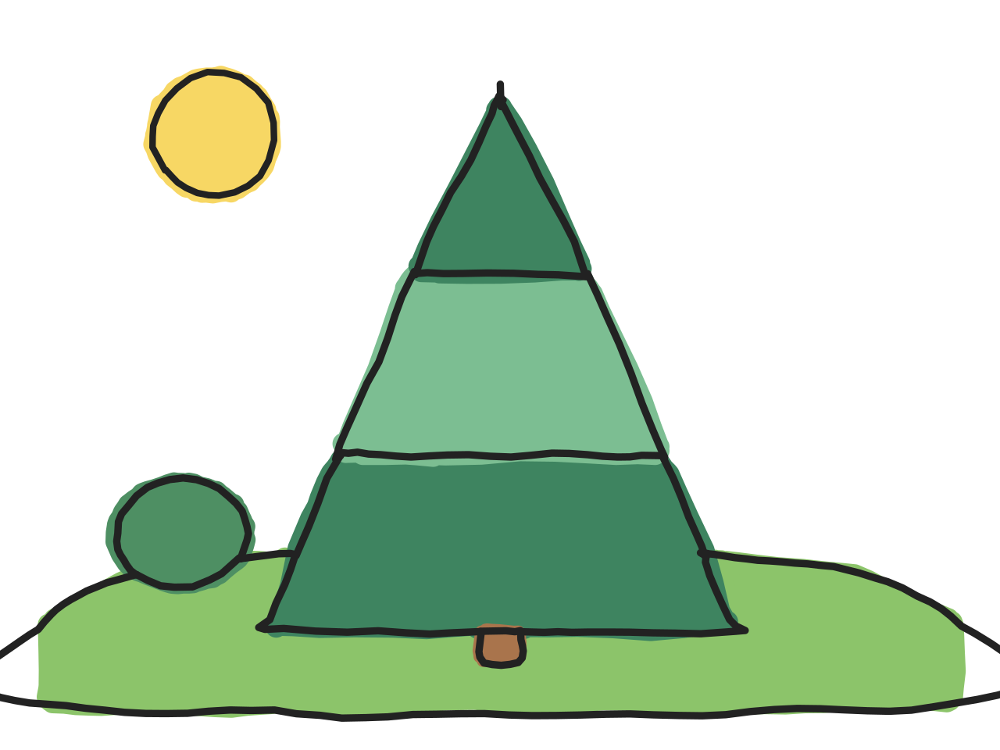
flat.py bg src/pine_ink.png --comic → 7 paths + 25 polylines, 95694 byte zip, ~1.6 s.3. Sketch: distance transform the ink
ink.py sketch — the ink engine.
This is the opposite approach. It does not start from colour regions at all; it starts from the ink and asks a geometric question at every ink pixel: how wide is the line here? Thin lines become strokes. Wide ink becomes a filled region. That one measurement replaces the whole colour-segmentation stage.
Step 1 — find the ink
Paper colour is read from the top rows. Ink is a pixel whose strongest channel has dropped from the paper colour, or which is locally darker than its surroundings (hysteresis: a high threshold seeds, a low threshold connects). Faded stroke ends are then walked outward along their own tangent so marker ramps are not lost. On this picture the mask comes out identical to the comic route's ink layer: both are the same "darker than the neighbourhood" test, expressed with a different metric.
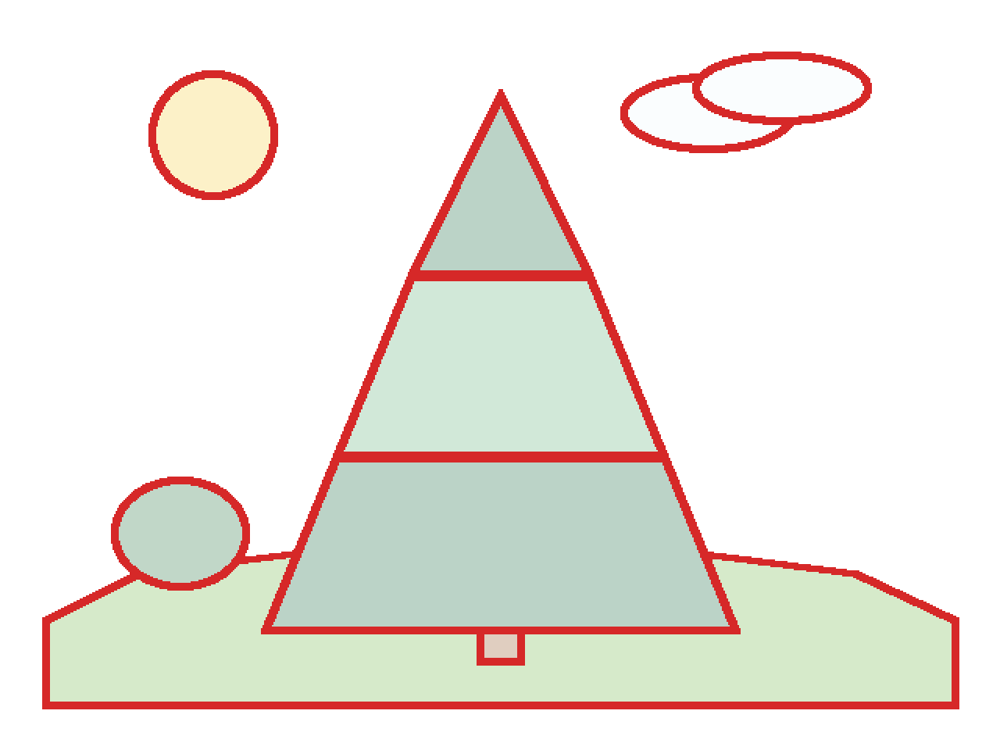
Step 2 — split by width
For every ink pixel, compute the distance to the nearest non-ink pixel. That distance is
the local half-width of the ink. A stroke has a small radius; a filled blob has a large
one. Split at r ≥ 7.0.
7 - 0.5 px, clipped to its own connected ink island, to recover
the true region boundary without a leftover donut of stroke around it.
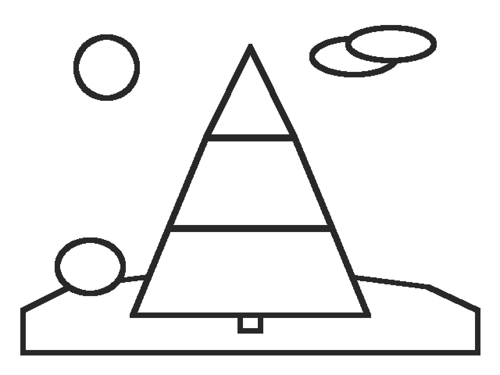
Each stroke chain gets a width from its own radius, so a thick contour draws thick and a fine detail draws fine, without any per-line settings.
Step 3 — wash the enclosed paper
With outlines only, the picture is blank paper with lines on it. --auto-tint
finds the closed pockets the ink encloses, samples the source colour inside each, and
paints a translucent marker wash over it, angled per pocket so the strokes look hand laid.
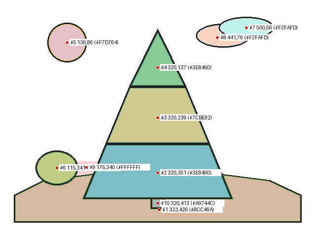
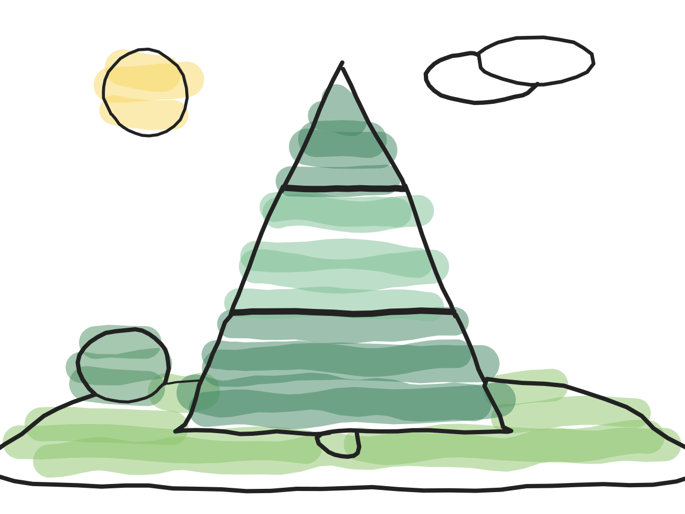
ink.py sketch src/pine_ink.png --auto-tint → 38 polylines, 145923 byte zip, ~6.2 s.4. Side by side
| Route | Starts from | Core idea | SVG content |
|---|---|---|---|
| Flat | flat colour bitmap | connected components → polygons → inset → brush | 6 paths + 7 polylines |
| Comic | inked bitmap | ink/layer split → octree + mode filter → skeleton redraw | 7 paths + 25 polylines |
| Sketch | inked bitmap | hysteresis ink → EDT width split → tinted pockets | 38 polylines |
5. Numbers
Measured on this scene, 640×480 page, rendered at 2× (1280×960), three runs each.
| Route | Runtime | SVG bytes | Zip bytes | Gate |
|---|---|---|---|---|
| Flat | 1.3–1.5 s | 7971 | 43920 | 1 warning (tier traced as one limb) |
| Comic | 1.6 s | 15555 | 95694 | clean |
| Sketch | 6.2 s | 12702 | 145923 | clean (coverage gate passed) |
The sketch route is about 4× slower, and the time is not in the tracing: with
--auto-tint removed it runs in 1.5 s, so nearly 5 s of the 6.2 is the
wash pass — finding enclosed pockets, sampling each one, and stamping hundreds of
translucent marker strokes at the right per-pocket angle. The coverage gate adds nothing
measurable (6.1 s with --no-budget-check), but it is the thing that caught
this scene's composition problems.